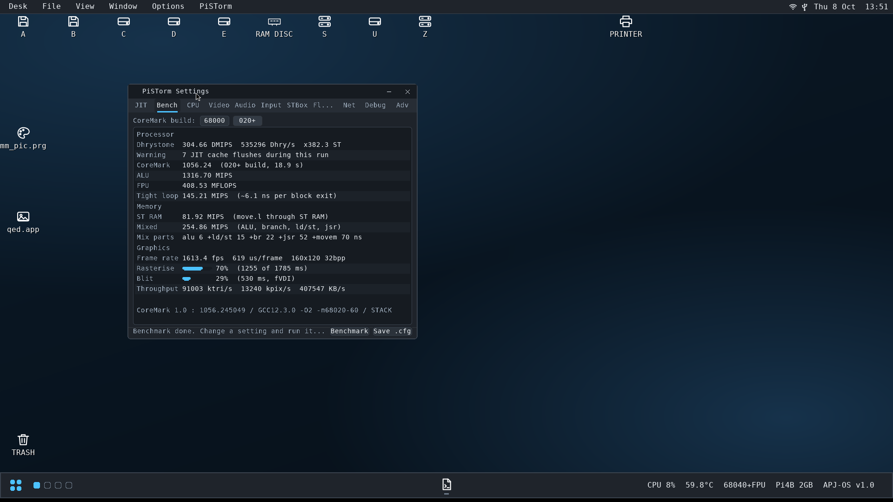
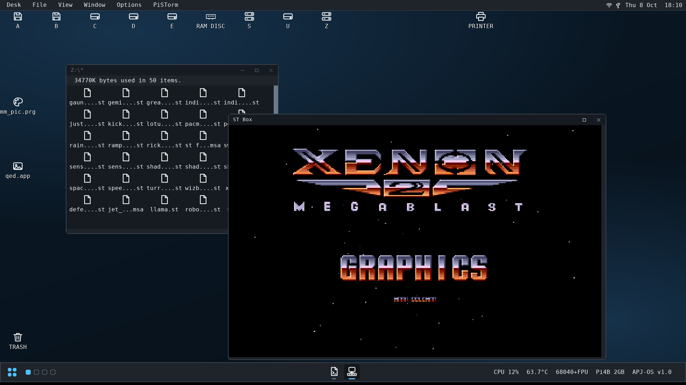
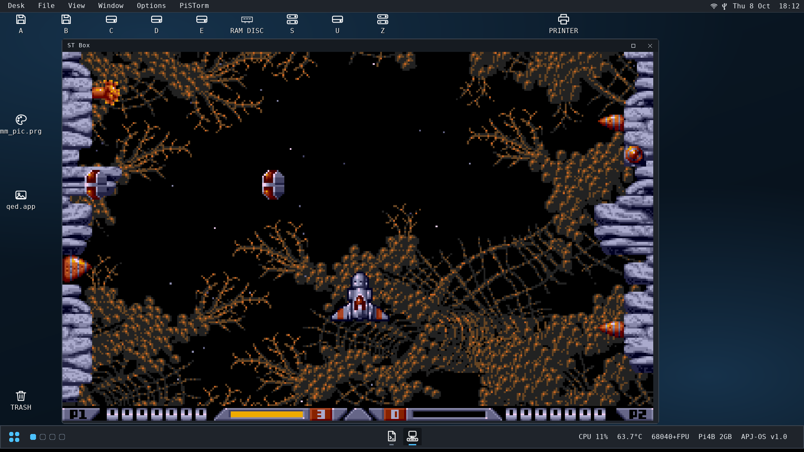
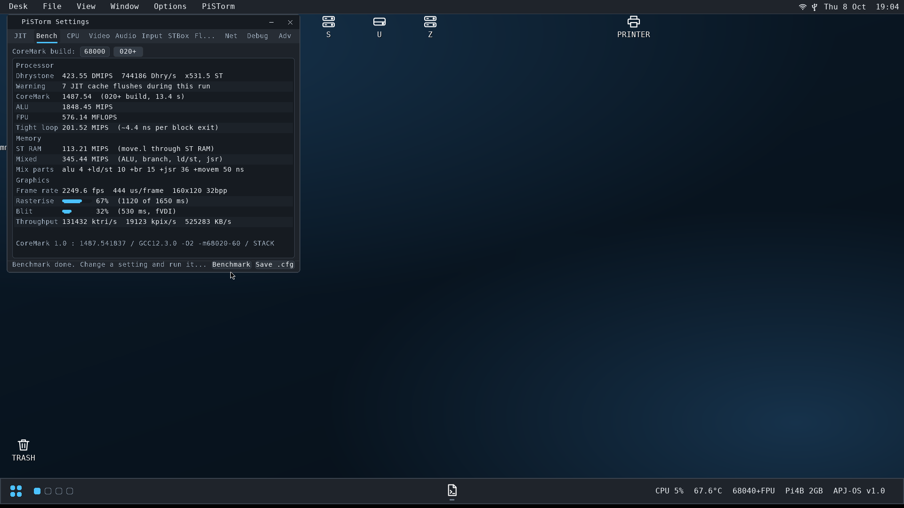

A PiSTorm board sits in the 68000 socket. The Pi runs the CPU as a JIT 68040 with FPU and talks to the real ST, STe or Mega ST over the bus.
# check the Pi can see the Atari $ sudo ./ataritest --reset $ sudo ./ataritest --memory tests=rw # start the launcher: the setup page comes # up on the ST monitor and on HDMI $ sh run-pistorm.sh # or boot the last build straight away $ sh run-pistorm.sh --no-setup
Your keyboard, floppy, shifter and sound chip are still the Atari's own. The processor moves to the Pi, and the Pi adds what the ST never had: fast RAM, HDMI graphics, networking and host-side media.
The original motherboard, chipset and peripherals. The 68000 comes out of its socket.
A CPLD bridges the 68000 bus to the Pi's GPIO header and handles bus timing.
Two cores run emulation, two are left for Linux. The ARM64 JIT turns 68k code into native code.
Boot EmuTOS or TOS as normal, or the APJ-OS desktop at up to 1920×1080 over HDMI.
Based on the Amiberry ARM64 JIT with hardware FPU. Any CPU from 68000 to 68060, or the interpreter when you need exact behaviour.
stram_cache keeps a copy of ST-RAM on the Pi and writes through only what the hardware must see. stram_direct lets the JIT use it inline.
Fast RAM at $01000000, in the Pi's memory. How much you can give it depends on how much RAM your Pi has.
GEM at 640×480 up to 1920×1080 in 8, 16 or 32-bit colour, rendered by the Pi.
PSVIDEL gives Falcon and SuperVidel software their video modes, 112 MB of video RAM and the SuperBlitter, on HDMI.
An ET4000AX card for NOVA, XVDI, NVDI or fVDI drivers, and a mirror of ST low, medium and high on HDMI.
A clean-room 56001 core with host port, SSI, sound matrix, 16-bit DMA and CODEC.
Chip music and STe DMA audio played through the Pi alongside the real chip.
Host MP3 playback, MP4/MKV/AVI playback with hardware H.264, and A/V screen recording.
Wired or Bluetooth pads as ST joysticks and STe joypads, in GEM, games and the ST Box. One line: usb gamepad.
Merged into the IKBD stream. The real ST keyboard and mouse are optional: use them, USB, or both.
WD1772 floppy emulation, IDE and ACSI disk images, and folders on the Pi as GEMDOS drives.
FreeMiNT networking over the Pi's WiFi, through the NatFeat Ethernet driver. The Pi's RJ45 Ethernet port isn't supported yet.
The ST BLiTTER in software over the RAM copy, with or without a real chip fitted.
A sandboxed 68000 ST or STe in a resizable GEM window under APJ-OS, for games that want a plain machine. More
Comfort with Linux helps. If you'd rather not build anything, flash the APJ-OS SD card image.
make -j2.The Pi 3A+ and Pi Zero 2 W have 512 MB of RAM and can't fit the memory layout. The Pi 5's GPIO sits behind the RP1 chip, which is too slow for bus work.
Bus arbitration in the CPLD doesn't work yet, so the real blitter chip and real DMA devices can't be driven. The emulated blitter, floppy and ACSI cover them.
Download apj-os-<version>.img.xz from the APJ-OS releases and write it to a 16 GB or larger card with Raspberry Pi Imager. Fill in wifi.txt on the boot partition for WiFi. The first boot expands the filesystem, then the Atari boots straight into APJ-OS.
Start from a fresh Raspberry Pi OS Lite 64-bit, logged in as your normal user (ideally pistorm). The installer calls sudo itself. Steps below.
The installer adds every package the build needs, so a current OS is all you need first.
sudo apt update && sudo apt upgrade sudo apt install git
This creates pistorm-atari-jit/ in your home directory.
cd ~ git clone https://github.com/gotaproblem/pistorm-atari-jit.git
It checks the OS, installs dependencies, merges the boot firmware settings, builds the emulator and puts the file tree in place. It asks about the autostart service, a Samba share and the web browser engine.
cd ~/pistorm-atari-jit ./install-full.sh sudo reboot
If these fail, fix the hardware first. Nothing else will work until they pass.
cd ~/pistorm-atari-jit sudo ./ataritest --reset sudo ./ataritest --memory tests=rw
The launcher shows your builds with a countdown on the last one. Enter boots, E edits. See Config for what each setting does.
sh run-pistorm.sh

APJ-OS 1.0 on a Pi 4B 2 GB at 1920×1080, with PSCTRL's benchmark results. A screen dump from the machine.
A ready-to-flash distribution: the emulator plus FreeMiNT, XaAES and the Bespoke Desktop, at up to 1920×1080 in 32-bit colour over HDMI.
The emulator, JIT and NatFeats.
apj-osmainThe distribution and SD image build.
apj-os-toolsmainPSCTRL, PSMON, PDFGEM, WEBGEM, MP3GEM, VIDGEM, skins.
freemintapj-os-fluentXaAES with the Fluent renderer and window chrome.
teradeskapj-os-fluentThe Bespoke Desktop: taskbar, themes, workspaces.
toswin2apj-os-fluentTerminal windows with themed text.
New work lands on its own branch first and joins main once it has run on real hardware.
Register allocation and flag handling, and a smaller footprint in the Pi's 48 KB instruction cache.
A single virtual MFP that merges real and virtual interrupt sources in priority order.
A make check that boots a matrix of CPU, JIT and machine settings before hardware time is spent.
The repository's LICENSE is MIT, inherited from the PiStorm project. It also contains code under other licences, and the GPL parts decide the terms for the built emulator as a whole.
| Part | Licence | Where |
|---|---|---|
| PiStorm base, bus protocol and the Atari platform code (NatFeats, Falcon DSP, ST Box and others) | MIT | LICENSE, SPDX headers |
| 68k CPU core, MMU and ARM64 JIT, from the UAE / WinUAE / Amiberry line | GPL-2.0-or-later | cpu/, jit/, include/uae/ |
| SoftFloat FPU emulation (John R. Hauser) | SoftFloat-2a / BSD | softfloat/ |
| Musashi 68000 core for the ST Box (Karl Stenerud) | MIT-style | third_party/musashi/ |
| stb single-file libraries | MIT or public domain | third_party/stb/ |
| Part | Licence |
|---|---|
| APJ-OS scripts and documentation | GPL-2.0 |
| FreeMiNT and XaAES, TeraDesk / Bespoke Desktop, TosWin2 | GPL-2.0 |
| EmuTOS | GPL-2.0 |
| fVDI | GPL |
| apj-os-tools GEM apps (PSCTRL, PSMON, PDFGEM, WEBGEM and others) | MIT (per-file headers) |
| CoreMark, in PSCTRL's benchmark | EEMBC licence + trademark terms |
| Dhrystone 2.1 (Reinhold P. Weicker) | freely distributed source |
Not included: Atari TOS ROM images and commercial Atari software. EmuTOS replaces TOS. Source for every GPL component, with all changes, is in the repositories linked above. This is a summary; the licence files in each repository are what apply.
Everything lives in configs/psctrl.cfg. Each [section] is a build: a complete machine. You rarely need to edit it by hand, because the setup page and PSCTRL both write it.
A [psctrl] block holds the setup page's own settings. Every other section is a build, and the emulator loads exactly one of them: the one you pick on the page, or the boot key.
Nothing is inherited between builds. Each says everything it needs. Lines are key value, # starts a comment, and a key on its own means on. Sizes are in KB unless you add M or G.
A build whose name starts with apj gets the APJ-OS-only keys on the page. The installer copies the default file in once and never overwrites yours.
[psctrl] countdown 5 boot apj-os rom_path ../roms disk_path ../dkimages [apj-os] cpu 68040 fpu ttram 128M jit_cache 16384 vga ET4000AX FVDI native_hdmi enabled machine ste kbd usb usb gamepad ym2149 rom emutos-aranym.rom ide hdd 0:apj-os.img fdd A:720k.st hostfs S /home/pistorm/atari-share
Drawn by the Pi on the ST's own video and mirrored to HDMI. It works with the ST keyboard, a USB keyboard or a gamepad. Nothing is written until you save or boot.
The editor has seven tabs: Machine, Video, Sound, Input, Drives, Network and Tuning. Skip the page with countdown 0 or --no-setup.
A selection. PSCTRL-CFG.md documents every key, its values and its environment overrides.
| Key | Values | What it does |
|---|---|---|
| cpu | 68000 … 68060 | The CPU the guest sees. 68000 and 68010 are 24-bit and can't have TT-RAM or the JIT. 68040 is the fastest with the JIT. |
| fpu | on / off | An FPU, on 68020 and up. |
| jit | on / off | The JIT compiler, on by default. Off runs the interpreter: several times slower, but exact. |
| jit_power | 0 – 6 | The compiled-chain budget, 256 << (N−1): 1 = 256 (default) up to 6 = 8192. 0 turns the JIT off. Step it down if MiNT beeps or the mouse gets erratic. |
| jit_cache | KB, default 8192 | The translation cache. 16384 for big applications. |
| machine | st ste megast falcon | What the guest is told it is, and the hardware modelled around it. |
| ttram | 16M … 256M, default 128M | TT-RAM in the Pi's memory, up to 256 MB. The size you can use depends on the Pi's RAM. Needs a 32-bit CPU. |
| stram_size | 512K … 4M | The ST-RAM the guest sees, matched against the board's real DRAM. |
| stram_cache | on / off | Serve CPU reads from a copy of ST-RAM on the Pi. Much faster. |
| stram_direct | on / off | Let the JIT read and write that copy inline. Faster again, and breaks some software. |
| mmu | on / off | Full MMU emulation for Basilisk II, MagiCMac and MiNT memory protection. Interpreter only. |
| Key | Values | What it does |
|---|---|---|
| vga | ET4000AX NOVA | XVDI | NVDI | FVDI | An ET4000AX card on HDMI, built for that Atari driver. FVDI is APJ-OS's. |
| native_hdmi | on / off | Mirror ST low, medium and high to HDMI at each real VBL. |
| hdmi_only | on / off | HDMI is the only display, so screen flips stay off the bus. |
| psvidel | on / off | Falcon Videl and SuperVidel on HDMI. Armed by PSVIDEL.PRG in AUTO. |
| ym2149 | on / off | The PSG on HDMI, alongside the real chip. |
| dma_sound | on / off | STe DMA sound on HDMI. |
| falcon_dsp | on / off | The DSP56001, sound matrix, DMA and CODEC. |
| blitter | on / real / off | Emulated blitter, pass-through to a real one, or none. Defaults by machine. |
| Key | Values | What it does |
|---|---|---|
| kbd | usb [nograb] [merge|standalone] [mousediv N] | USB or Bluetooth keyboard and mouse, injected into the IKBD stream. The real ST keyboard and mouse are optional. F12 toggles the grab. |
| usb | gamepad | Xbox and other pads as joysticks and STe joypads. Pad 0 is joystick 1 and pad A. |
| ide / hdd | N:image | IDE disk images, up to 8. The first should be bootable. |
| acsi | N:image | Emulated ACSI targets beside real devices. .hfs volumes for Spectre. |
| fdd | A:image B:image | Floppy drives: .st read-write, .msa read-only. F11 swaps disks. |
| hostfs | drive path [ro] | A Pi folder as a GEMDOS drive. The installed share is S:. |
| network | on / off | FreeMiNT networking over a TAP device, set up by netstart.sh. WiFi only for now; the RJ45 port isn't supported yet. |
PSCTRL puts every switch and tunable the emulator has in one window, and applies changes while your program runs. It ships as PSCTRL.ACC and PSCTRL.PRG in apj-os-tools.
An accessory sits in the Desk menu of every application under TOS and XaAES, so you can open it while a game or the ST Box is running. That's the point: jit_power is worth moving against the game you're actually playing.
Put PSCTRL.ACC in the root of the boot drive and the skins in C:\GEMSYS\SKINS\. It follows the desktop's Fluent theme at 100, 125 or 175% scale. Without a skin it still runs on plain controls.
No control is compiled into the program. At startup it asks the emulator for every setting, with its key, title, tab, kind, range and current value, and builds the tabs from the answers. A new emulator switch shows up without rebuilding PSCTRL.
| On / off | a checkbox |
| A few short choices | radio buttons |
| Longer lists | a pop-up list |
| Numbers | a slider with the value |
| Files | a field that lists the Pi's images |
| Live readouts | refreshed twice a second |
The badge beside each control tells you, and the status line confirms what happened after you change it.
Read again by the emulator straight away. In effect before you let go of the mouse.
Applied at the next JIT block boundary. Used for anything that flushes or resizes the translation cache.
Part of the machine's shape. Saved and applied on the next restart.
Takes effect the next time the ST Box starts.
The Bench tab runs a benchmark as 68k code inside the accessory, so it measures what programs get on the settings in force now. It takes about twenty seconds and shows the previous run beside the new one.
The first pass is thrown away, because that's when the JIT compiles the benchmark. Dhrystone runs its own self-check, so a mistranslation shows up as a failure rather than a suspiciously good score. Results and what each figure means.
PSMON shows the live JIT figures (speed as a multiple of an 8 MHz ST, JIT hit rate, idle time, cache use, compiles), guest memory, and the Pi underneath: board, RAM, ARM clock, temperature and throttle state.
The throttle row matters. A Pi that is thermally capped runs the JIT slower, and nothing on the Atari side would otherwise tell you why a figure dropped.
Both are on the APJ-OS boot disk, and in apj-os-tools with their sources. They need the PSCTRL NatFeat in the emulator, which is in main.
cd apj-os-tools/psctrl && make cd ../psmon && make
Games written for an 8 MHz 68000 want ST timing, not a JIT 68040 under FreeMiNT. The ST Box is a second, private Atari ST inside the emulator, running at 8.02 MHz in a GEM window on the APJ-OS desktop.
The box has its own ST-RAM, its own TOS ROM, and its own models of the Shifter, MFP, PSG, ACIA and floppy controller. A Musashi 68000 core runs it, paced against the Pi's clock to exactly 8.021248 MHz and a 50.05 Hz PAL frame.
It runs on core 3 in small, bounded slices between the main machine's interrupt work, so the APJ-OS desktop keeps running alongside it. Its picture goes to a spare HDMI overlay plane laid exactly over the GEM window, so video playback and the box can share the screen.
The window resizes in real time while the box runs. Drag it to any size, up to full screen, and the picture scales with it, keeping the ST's aspect ratio.
Nothing the box does touches the real ST. Its memory, disks and hardware are all its own.

STBOX.PRG is installed in apj-os/STBox/ with your .st and .msa images. Run it with no arguments for a file selector that browses the HOSTFS share, or name an image to boot it straight away.
| stbox_tos | The box's TOS: 1.04, 2.06, or a 192K or 256K EmuTOS. The Aranym EmuTOS of the main machine won't boot it. |
| stbox_machine | st (default) or ste. An STE box needs an STE-aware TOS. |
| stbox_plane | Force an HDMI overlay plane. Leave it out for automatic. |
These keys appear on the setup page for any build whose name starts with apj. PISTORM_STBOX_TOS overrides stbox_tos.
| STBOX.PRG | File selector, then boot the chosen image |
| STBOX.PRG game.st | Boot that image |
| … st / ste | Override stbox_machine for this launch |

All three ST video modes, Timer B counting display lines like the real chip, and the video address counter following the display window.
Type I, II and III commands, DMA, side select and index pulse. READ TRACK is built from sector data with real CRCs. .st and .msa images.
The YM2149 mixed into the Pi's audio output.
MMU bank aliasing, so TOS sizes 512K, 1M, 2M and 4M correctly.
USB keyboard and mouse, the real ST keyboard, mouse and joystick, and Xbox or USB gamepads, routed to whichever has focus.
Resize the window while a game runs. The picture scales in real time and keeps the ST's aspect ratio.
A double bus fault halts the box with a 64K PC trace, a disassembly of the scene and write watchpoints.
12-bit palette, fine horizontal scroll, line width and the low byte of the screen base.
The main machine's blitter engine, run in steps at the real chip's throughput. Tested against it over 20,000 random blits.
Play and repeat, 6 to 50 kHz, microwire volume, and the STe joypad ports fed from your gamepads.
In an ST box none of the STE registers are decoded, so TOS 2.06's STE probe finds a plain ST, just as on the real machine.
The ST Box core builds and runs on any computer. A harness boots each image for 60 guest-seconds, presses keys and fire every 3 seconds, and reports what happened. The whole collection takes about 75 seconds. Results from 9 September 2026.
Number of the 40 images in each state after 60 guest-seconds.
| Configuration | Running | Stuck | Crash | Halt |
|---|---|---|---|---|
| TOS 1.04, ST | 13 | 21 | 0 | 6 |
| TOS 2.06, ST | 29 | 5 | 1 | 5 |
| TOS 2.06, STE | 30 | 5 | 1 | 4 |
Arkanoid II, Barbarian II, Battle Chess, Black Tiger, Blasteroids, Blood Money, Bubble Bobble, Buggy Boy, Cannon Fodder, Crazy Cars, Defender of the Crown, The Great Giana Sisters, Indiana Jones and the Fate of Atlantis, Indiana Jones and the Last Crusade, Just Buggin', Kick Off 2, Lotus III, Populous, Rampage, Rick Dangerous, Shadow of the Beast, Shufflepuck Cafe, Wizball, Xenon 2, Jet Set Willy, and more. Space Harrier runs as an STE.
Chaos Strikes Back, Dark Side of the Spoon, Sensible Soccer, Rainbow Islands and Gauntlet II (on TOS 2.06). Each has a crash report from the harness, and they're the next targets.
Fixed in that round: the WD1772 interrupt clearing on a new command, 68000 trace mode, and the video address counter. No title that ran before broke.
tools/stbox-harness/ builds a variant of the box, runs every image through it and compares variants side by side. Switch individual fixes off with build flags to see which change fixed or broke which title.
Write watchpoints, PC history, disassembly at a fault and an FDC sector map are all a variable away.
tools/stbox-harness/build.sh cur ROMS=roms GAMES=games \ tools/stbox-harness/batch.sh tos206uk 60 cur HARNESS_STE=1 ROMS=roms GAMES=games \ tools/stbox-harness/batch.sh tos206uk 60 cur
Writes stay in memory and aren't saved back to the image. No GEMDOS hard disk in the box yet.
The palette is taken once per frame, so mid-frame colour changes smear. Scanline-level Shifter tricks aren't modelled.
A game's IKBD commands reach the box's keyboard model, not the real one. A real joystick reports in whatever mode the main machine left it. USB pads aren't affected.
PSCTRL's benchmark on APJ-OS 1.0: a JIT 68040 with FPU on a Raspberry Pi 4B 2 GB, at its stock 1.5 GHz and overclocked to 2.1 GHz. Run on 8 October 2026.
| Test | 1.5 GHz (stock) | 2.1 GHz | Change |
|---|---|---|---|
| Processor | |||
| Dhrystone 2.1 | 304.66 DMIPS | 423.55 DMIPS | +39% |
| vs an 8 MHz ST | ×382.3 | ×531.5 | +39% |
| CoreMark (020+ build) | 1056.24 | 1487.54 | +41% |
| ALU | 1316.70 MIPS | 1848.45 MIPS | +40% |
| FPU | 408.53 MFLOPS | 576.14 MFLOPS | +41% |
| Tight loop | 145.21 MIPS | 201.52 MIPS | +39% |
| per JIT block exit | ~6.1 ns | ~4.4 ns | −28% |
| Memory | |||
| Mixed (ALU, branch, ld/st, jsr) | 254.86 MIPS | 345.44 MIPS | +36% |
ST-RAM (move.l) | 81.92 MIPS | 113.21 MIPS | +38% |
| Mix parts: alu / +ld/st / +br / +jsr / +movem | 6 / 15 / 22 / 52 / 70 ns | 4 / 10 / 15 / 36 / 50 ns | |
| Graphics, 160×120 32-bit | |||
| Frame rate | 1613.4 fps | 2249.6 fps | +39% |
| Per frame | 619 µs | 444 µs | −28% |
| Rasterise / blit | 70% / 29% | 67% / 32% | |
| Triangles | 91.0 M/s | 131.4 M/s | +44% |
| Pixels | 13.2 M/s | 19.1 M/s | +44% |
| fVDI blit throughput | 407,547 KB/s | 525,283 KB/s | +29% |
The clock went up 40%, and nearly every figure followed it: the JIT is compute-bound, not waiting on memory. The mixed loop gains a little less because part of it goes through ST-RAM on the real bus, which doesn't speed up with the Pi. CoreMark 1.0 : 1487.541837 / GCC12.3.0 -O2 -m68020-60 / STACK, 13.4 s at 2.1 GHz (1056.245049, 18.9 s stock). PSCTRL noted 7 JIT cache flushes in both runs.
jit_power 6, 59.8 °C.
arm_freq=2100, over_voltage=6), 67.6 °C.CoreMark in 68000 mode at 1.5 GHz, from the performance tuning work on 7 September 2026. Raising jit_power from 3 to 5 added 4.3%. The 8 October runs above use 6, the maximum.
Pi 4 at 1.5 GHz, 68000 mode, 7 Sep 2026. Higher is better.
| Setting | Chain budget | CoreMark | Change |
|---|---|---|---|
| jit_power 3 | 1024 | 783 | baseline |
| jit_power 4 | 2048 | 803 | +2.6% |
| jit_power 5 | 4096 | 817 | +4.3% |
Measured with perf-tlb.sh while CoreMark ran in 68040 and 68060 mode.
The Cortex-A72 retires two instructions per cycle. The core isn't stalling on memory.
About one TLB refill per 10,000 instructions. Huge pages wouldn't help, which is why they're moot on the stock kernel.
Translated code and the dispatch loop overflow the 48 KB L1 instruction cache. The next gains are in JIT code size and quality.
| Change | Expected | Measured | Cost |
|---|---|---|---|
jit_power 4 / 5 | +1–2% | +2.6% / +4.3% | A wider window before interrupts are taken |
jit_cache 16384 | 0–3% on GEM and MiNT | not measured on its own | 8 MB of RAM. CoreMark fits in 8 MB and won't move. |
arm_freq=2100 + over_voltage=6 | +35–40% | +36–44% (PSCTRL, 8 Oct) | Heat: 67.6 °C vs 59.8 °C stock. Needs a heatsink and ideally a fan. |
| 2 MB huge pages | +3–6% | 0 | None. The stock kernel has huge pages off. |
The overclock lines are already in configs/config.txt, commented out. Check vcgencmd get_throttled after a long session: 0x0 means it never throttled.
Open PSCTRL's Bench tab and press B. Pick the 68000 or 020+ CoreMark build first. It runs inside the accessory and reports each figure next to your previous run.
| Figure | What runs | What it tells you |
|---|---|---|
| Dhrystone 2.1 | Weicker's published source, unchanged loop, with its self-check | The headline. Compared with 1400 Dhry/s for a stock 1040 ST at 8 MHz, shown as ×N. |
| CoreMark | Built twice, for 68000 and for 020-and-up; at least 10 seconds | What the larger instruction set is worth on the same machine. |
| MIPS mixed | ALU, branches, ST-RAM load and store, jsr/rts, movem | The one to watch. Closest to a game's inner loop, and the one jit_power moves. |
| MIPS ALU | Register-only arithmetic | Raw translation quality. |
| MIPS ST-RAM | move.l (a0)+,(a1)+ over 32 KB of ST-RAM | The bus path: stram_cache, stram_direct, TT-RAM placement. |
| MFLOPS | An fmul/fadd chain, when an FPU is present | The FPU model and JIT FPU. |
| 3D | A shaded solid spun for a fixed time | Rasterising and blitting timed apart, because a slow frame means different things depending on which one cost the time. |
| BogoMIPS | dbra and nothing else | A ceiling, not a speed. The JIT folds the loop away. |
Timing uses the 200 Hz counter at $4BA, driven by the MFP rather than anything the JIT does. Compile flags are fixed so results stay comparable between releases.